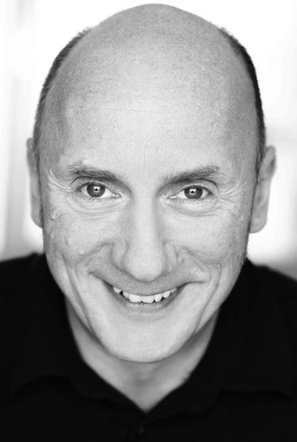
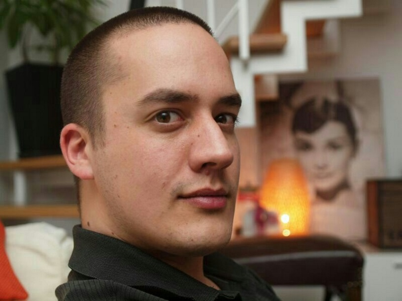
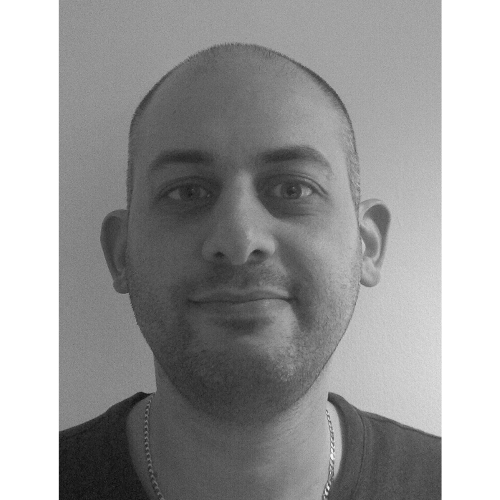
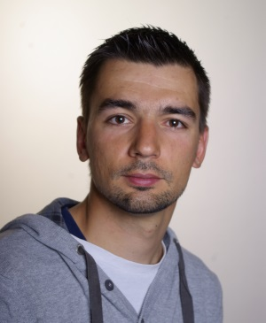

Ralf Westphal - Keynote

Ralf Westphal ist freiberuflicher Berater, Projektbegleiter, Referent, Autor und Trainer für Themen rund um Softwarearchitektur und die Organisation von Softwareteams.
Er ist Mitgründer der Initiative "Clean Code Developer" (CCD) für mehr Softwarequalität, propagiert kontinuierliches Lernen mit der CCD School (ccd-school.de) und möchte mit ich-verspreche.org zu mehr Zuverlässigkeit motivieren.
Blog: http://ralfw.de/blog
Twitter: @ralfw
Marco Heimeshoff - DDD mit F#
Domain Driven Design (DDD) legt den Fokus der Entwickler auf das
Verhalten des Business und auf Modellieren in einer gemeinsamen
Sprache zwischen Kunden und Entwicklern. Klassisch werden dabei
objektorientierte Domänenmodelle implementiert, aber DDD lässt einem
bei der Wahl des Paradigmas vollkommene Freiheit.
Statisch typisierte funktionale Sprachen wie F# eröffnen alternative
Möglichkeiten mit Typen und Modellen die Domäne zu designen.
Funktionale Typen erlauben eine natürlichere Modellierung als mit OO
möglich wäre, und die entstehende Representation der Domäne ist dabei
noch selbst-dokumentierend. Häufig lassen sich Businessregeln sogar so
implementieren, das man mit ihnen kein inkorrektes Verhalten coden
kann. Sozusagen ein automatischer Unittest durch den Compiler.
Ich möchte mit euch gemeinsam erforschen, wie natürlich und elegant
Domänen mit funktionalen Typen modelliert werden.
Kein Vorwissen in DDD, F# oder funktionaler Programmierung erforderlich
Marco Heimeshoff ist selbstständiger Softwareentwickler und Coach aus Münster.
Als passionierter Softwarecraftsman und Mitbegründer des SoCraMOB tauscht er sich regelmäßig
auf OpenSpaces und Konferenzen zu funktionalen Softwarearchitekturen und agilen Prinzipien aus.
Marco gründete 2011 die deutsche DDD Community und ist seitdem begeistert von Themen wie Event Storming, CQRS/ES und DDD. Twittern Sie ihm unter @Heimeshoff.
Carsten König
Carsten ist Softwareentwickler, Sprecher und Trainer. Sein Schwerpunkt liegt in funktionalen Programmierung im Allgemeinen und F# im Besonderen.
Mike Bild
TBD
Isaac Abraham - F# in the cloud
Eine der Schwierigkeiten mit Verteilten Applikationen ist das Entwickeln von Lösungen die skalierbar sind und trotzdem einfach zu verstehen. Cloud-Anbieter bieten uns eine Reihe von Diensten, die es uns erlauben Applikationen schnell zu entwickeln und gleichzeitig den Fokus auf den Geschäftsprozessen zu halten. In diesem Vortrag werden wir verschiedene Dienste von Microsofts Azure Cloud verwenden und sehen wie man mit ihnen Event Processing betreiben kann. Durch Bündelung dieser Dienste und den Einsatz von F# werden wir große Mengen an Daten verarbeiten und analysieren.
Isaac Abraham ist F# MVP und .NET-Entwickler seit .NET 1.0 und interessiert sich für Cloud-Computing und Verteilte Anwendungen. Derzeit lebt er gleichermaßen in Großbritannien und Deutschland und leitet die Firma "Compositional IT". Seine Spezialgebiete sind Consulting, Training und Entwicklung. Mit Compositional IT hilft er seinen Kunden den Einstieg in die Welt der "functional-first"-Lösungen auf der .NET-Platform zu erreichen.
Max Malook
TBD
Steffen Forkmann - Ein Ausflug in den F# Compiler
 Compiler strahlen seit jeher eine Faszination aus und werden gleichzeitig oft als schwarze Magie angesehen,
die man nur nach jahrelangem Studium versteht.
Seitdem der F# Compiler open sourced wurde besteht nun die Möglichkeit einen modernen Compiler in all seinen Facetten zu betrachten und sogar anzupassen.
In diesem Vortrag werden wir den groben Aufbau des Compilers mit all seinen Phasen betrachten und einige Beispiele analysieren,
die zeigen wie die Community den Compiler erweitert.
Es sind keine Vorkenntnisse in Compilerbau notwendig.
Steffen Forkmann arbeitet als Software Developer an großen Abrechnungssystemen und hat viel Erfahrung mit der Anwendung von Konzepten der funktionalen Programmierung in Real-World Szenarien.
Steffen ist ein aktives Mitglied der F# open source community und arbeitet an Projekten wie FAKE - F# Make, Paket und dem F# Compiler. Steffen twittert unter @sforkmann.